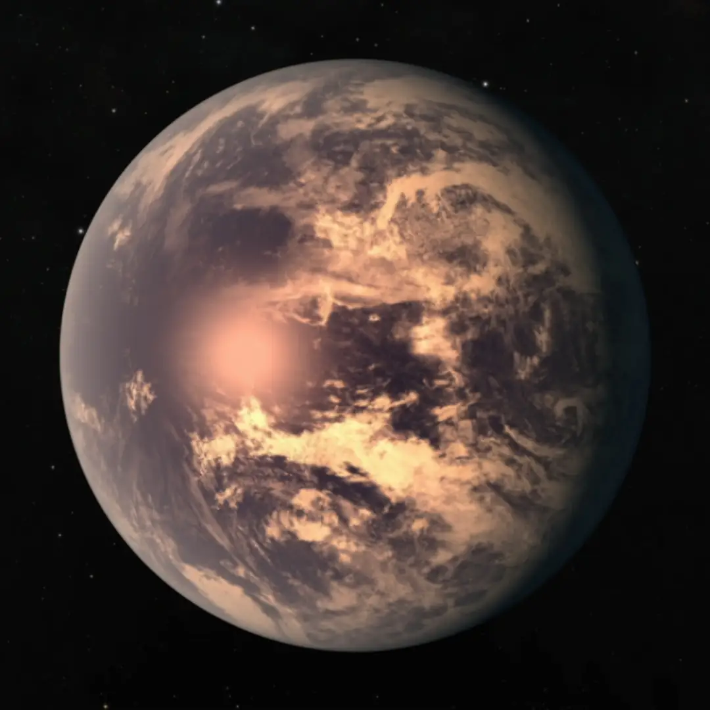

TRAPPIST-1 e — Exoplaneta

Introdução e História
TRAPPIST-1 e é um exoplaneta rochoso que orbita dentro da zona habitável da estrela anã ultrafria TRAPPIST-1, localizada a cerca de 40 anos-luz da Terra, na constelação de Aquário.
Ele foi descoberto em 2017 junto com outros seis planetas no sistema TRAPPIST-1 usando principalmente a técnica de trânsito — em que se observa o escurecimento periódico da estrela quando o planeta passa à sua frente.
Características Físicas: Massa, Raio e Órbita
TRAPPIST-1 e é quase do tamanho da Terra, com um raio estimado em cerca de 0,92 vezes o da Terra e uma massa próxima de 0,62–0,69 massas terrestres, indicando uma composição predominantemente rochosa.
Ele completa uma volta em torno de sua estrela em cerca de 6 dias terrestres, orbitando muito mais perto de sua estrela do que a Terra orbita o Sol — isso é comum em sistemas com estrelas pequenas e frias.
A temperatura de equilíbrio estimada é em torno de -22 °C a -27 °C, dependendo da reflectância e composição atmosférica — temperaturas que poderiam permitir água líquida sob certas condições.
Potencial de Habitabilidade
- 💧 Zona Habitável: TRAPPIST-1 e orbita dentro da zona habitável de sua estrela — região onde a energia estelar é tal que a água líquida poderia existir na superfície sob condições favoráveis.
- ⚠️ Atmosfera Desconhecida: Observações com o telescópio espacial James Webb não detectaram uma atmosfera hidrogénio-dominante, mas ainda não há confirmação de uma atmosfera parecida com a da Terra.
- 🌍 Possibilidade de Água: Modelos sugerem que, se tiver uma atmosfera densa, o planeta poderia redistribuir calor entre o lado diurno e noturno, criando condições estáveis e possivelmente permitindo água líquida na superfície.
Esses fatores fazem de TRAPPIST-1 e um dos candidatos mais interessantes para estudos de habitabilidade entre exoplanetas rochosos conhecidos.
Curiosidades
O sistema TRAPPIST-1 tem sete planetas rochosos conhecidos — um recorde de número de planetas de tamanho terrestre em torno de uma mesma estrela fora do Sistema Solar.
TRAPPIST-1 e é considerado um dos exoplanetas mais promissores para ter condições habitáveis, mas sua atmosfera ainda é um grande mistério científico.
Devido à sua órbita muito próxima da estrela, TRAPPIST-1 e provavelmente está em rotação síncrona — sempre mostrando o mesmo lado para sua estrela, com um lado permanentemente iluminado e o outro sempre no escuro.
Origem do Nome
O nome “TRAPPIST-1 e” segue o sistema de nomenclatura científica que identifica exoplanetas pelo nome da estrela que orbitam (TRAPPIST-1) e a letra que indica a ordem de descoberta ou posição orbital (“e” para o quarto planeta descoberto no sistema).
Referências
- NASA. TRAPPIST-1 e — Exoplanet Exploration. Disponível em: https://science.nasa.gov/exoplanet-catalog/trappist-1-e/ . Acesso em: 26 dez. 2025.
- Wikipedia. TRAPPIST-1 e. Disponível em: https://pt.wikipedia.org/wiki/TRAPPIST-1e . Acesso em: 26 dez. 2025.